Research
Selected Publications

|
Transcending the Limit of Local Window: Advanced Super-Resolution Transformer with Adaptive Token Dictionary |
| 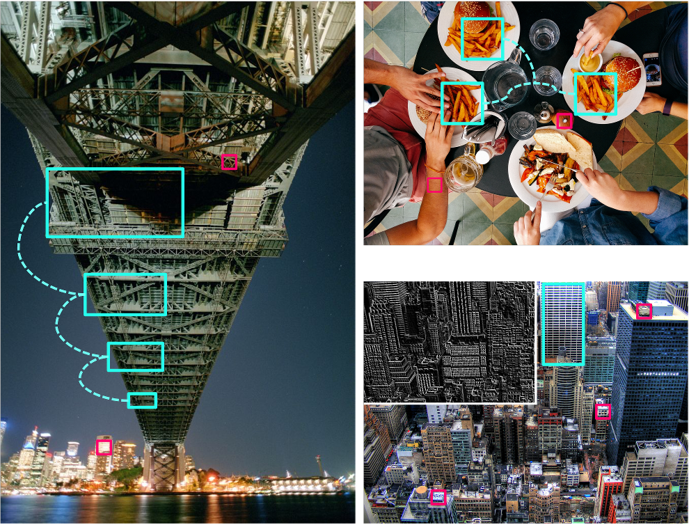 |
Efficient and explicit modelling of image hierarchies for image restoration |
| 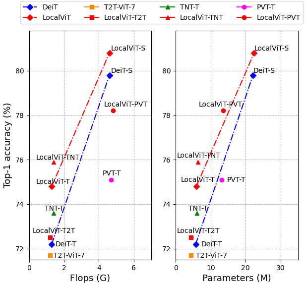 |
LocalViT: Analyzing Locality in Vision Transformers |
| 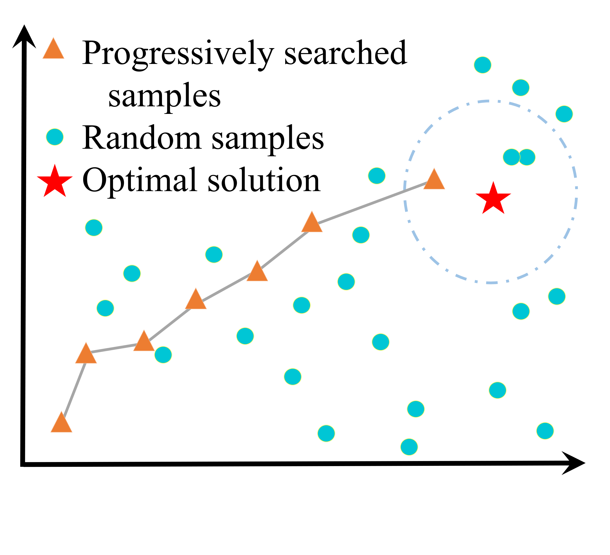 |
Revisiting Random Channel Pruning for Neural Network Compression |
| 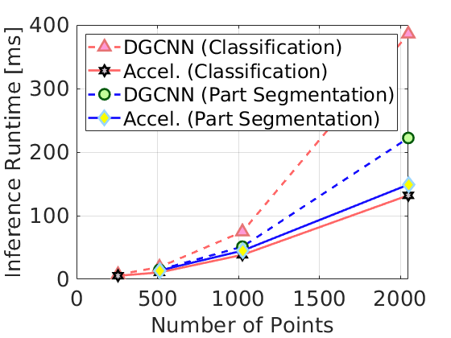 |
Towards Efficient Graph Convolutional Networks for Point Cloud Handling |
| 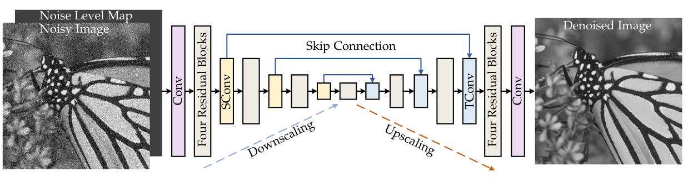 |
Plug-and-Play Image Restoration with Deep Denoiser Prior |
| 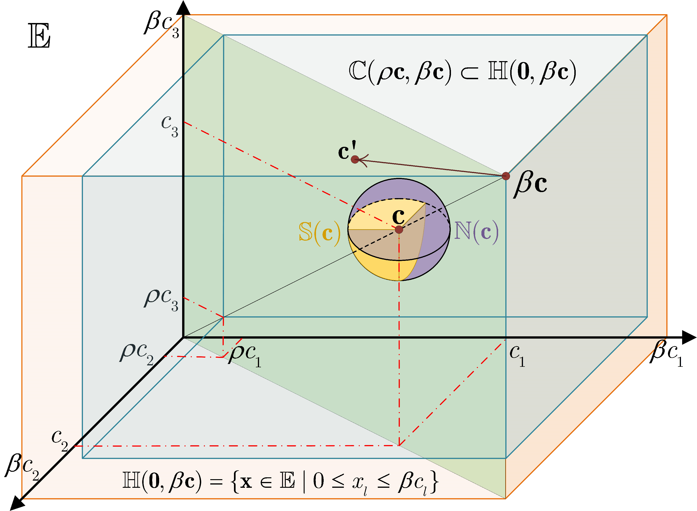 |
The Heterogeneity Hypothesis: Finding Layer-Wise Dissimilated Network Architecture |
| 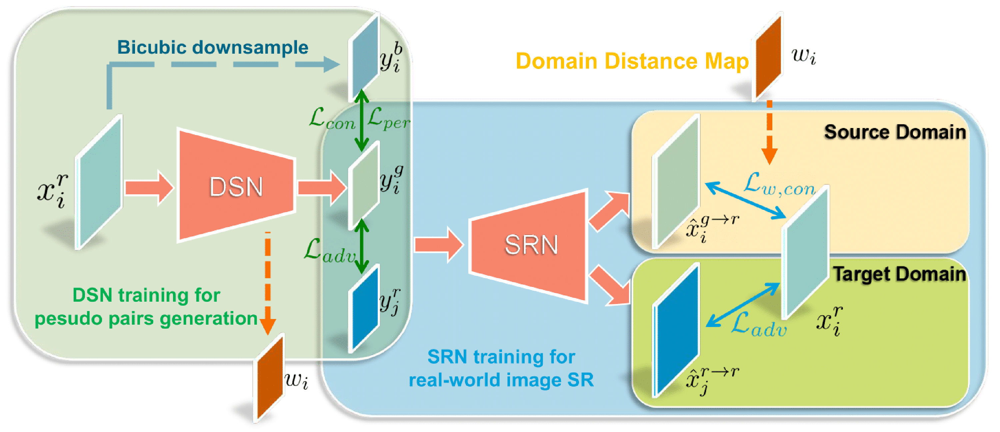 |
Unsupervised Real-world Image Super Resolution via Domain-distance Aware Training |
| 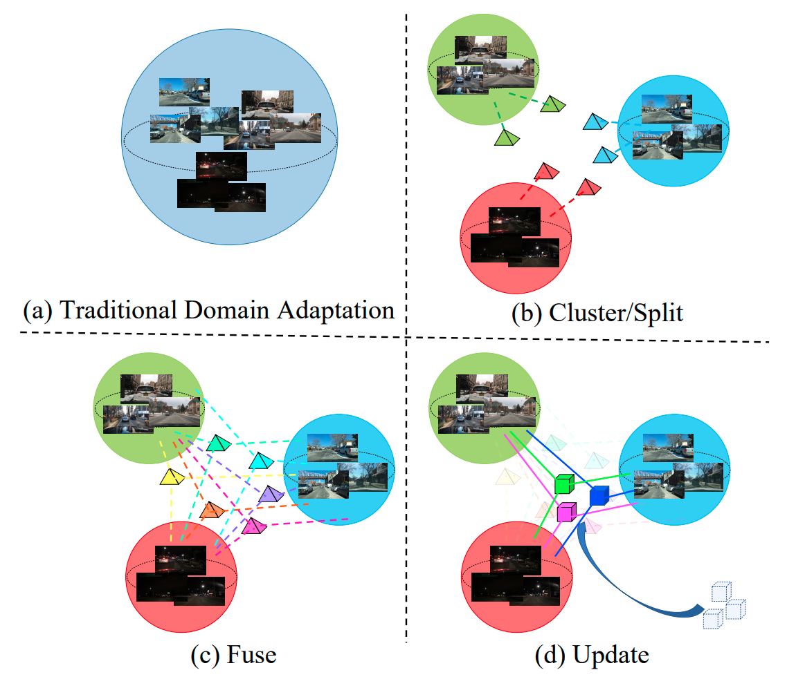 |
Cluster, Split, Fuse, and Update: Meta-Learning for Open Compound Domain Adaptive Semantic Segmentation |
| 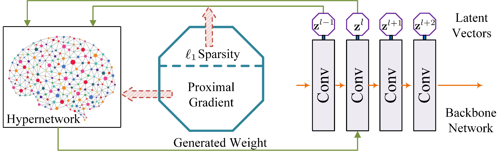 |
DHP: Differentiable Meta Pruning via HyperNetworks |
| 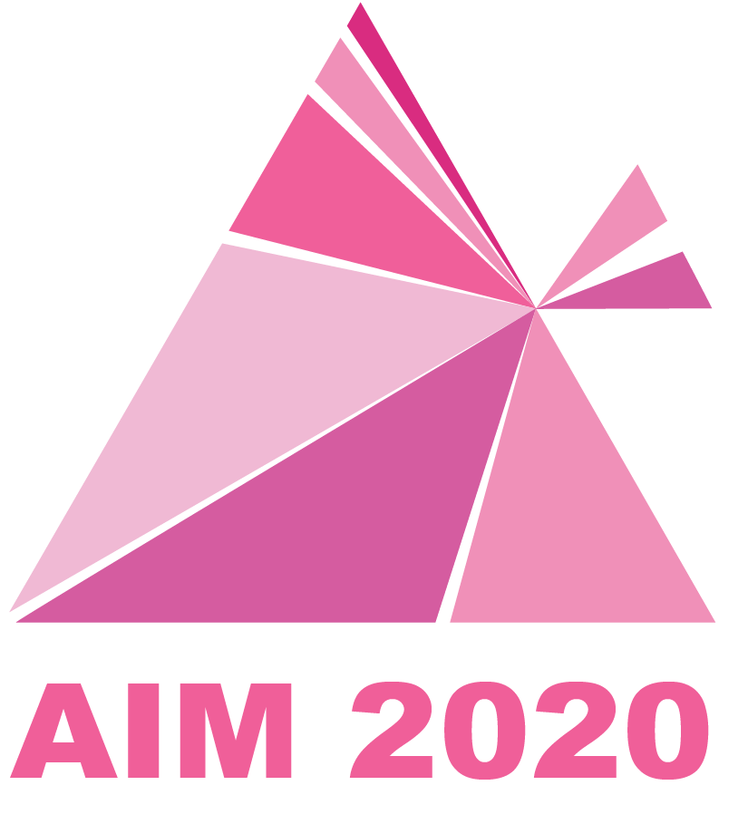 |
AIM 2020 Challenge on Efficient Super-Resolution: Methods and Results |
| 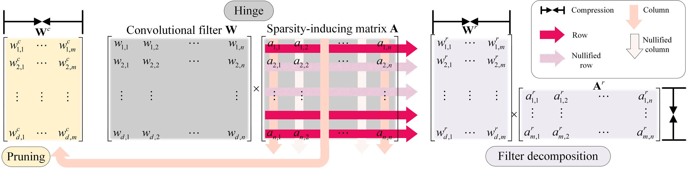 |
Group sparsity: The Hinge Between Filter Pruning and Decomposition for Network Compression |

|
Learning filter basis for convolutional neural network compression |
| 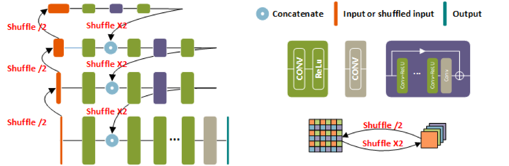 |
Self-guided network for fast image denoising |
| 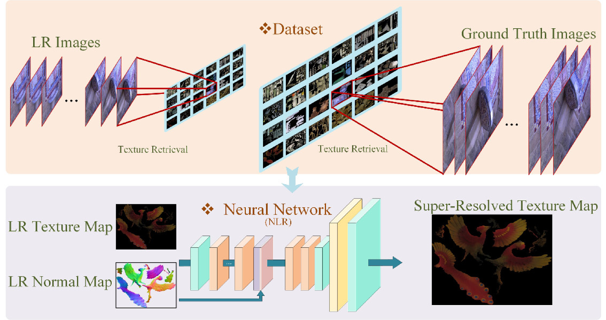 |
3D appearance super-resolution with deep learning |
| 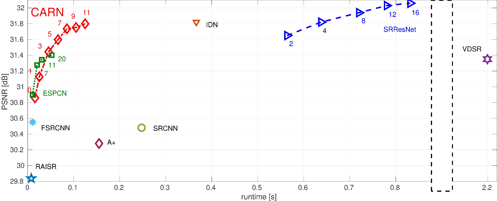 |
CARN: Convolutional anchored regression network for fast and accurate single image super-resolution |
| 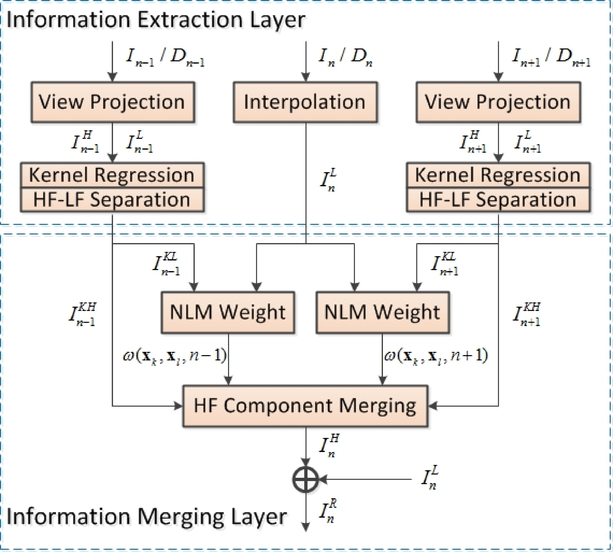 |
Multiview Video Super-Resolution via Information Extraction and Merging |